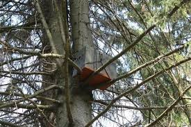

Бджільництво
Продукти
Лікування
Секрети бджільництва.
Охота на бджіл.
 Зі всіх видів полювання, мабуть, саме охота на бджіл найгуманніша. Займаючись лісовим ловом бродячих роїв,
охотник-роєлов не прирікає свою жертву на смерть. Він надає диким бджолам досить комфортне, хоча і в чомусь рабське
існування. Надійний дах у вигляді пастки з рамками, а потім і повноцінний вулик на пасіці, рятують бджіл від можливої
загибелі в лісі, але тим самим заставляють їх орати на бджоляру. Як ловити бродячі рої, які пастки використовувати,
де і коли їх ставити - про все це я розповім вам сьогодні, дорогі друзі.
Зі всіх видів полювання, мабуть, саме охота на бджіл найгуманніша. Займаючись лісовим ловом бродячих роїв,
охотник-роєлов не прирікає свою жертву на смерть. Він надає диким бджолам досить комфортне, хоча і в чомусь рабське
існування. Надійний дах у вигляді пастки з рамками, а потім і повноцінний вулик на пасіці, рятують бджіл від можливої
загибелі в лісі, але тим самим заставляють їх орати на бджоляру. Як ловити бродячі рої, які пастки використовувати,
де і коли їх ставити - про все це я розповім вам сьогодні, дорогі друзі.
Навіщо ловити бродячі рої?
Ловля бджіл пастками це найдешевший спосіб, що дозволяє створити свою пасіку з нуля. Встановлюючи пастки в лісі ви зможете отримати бджіл безкоштовно. Окрім спійманих роїв можна вже до кінця свого першого сезону зібрати в пастках непоганий урожай меду. І третя, важлива причина для того, щоб відправитися в ліс для ловлі роїв пастками, це подсилення слабких сімей на пасіці. Слабкі сім'ї, подсилені вчасно (напередодні головного взятку), гарантовано дадуть хороший врожай меду в кінці літа. У будь-якому випадку ловля роїв – заняття вельми захопливе і корисне. Чимось воно нагадує мені рибалку.Пастка для бджіл та її конструкція.
Пастка це не що інше, як невеликий вулик. Звичайна пастка вміщає в себе від 4-х до 10 рамок
дадан. Знімати великі пастки з бджолами і медом важко, адже їх вага в кінці серпня може перевищувати 40 кг А тому
частенько зручніше користуватися невеликими на 4-6 рамок.Виготовляються пастки з дерева, фанери, ДВП. Пастка повинна
мати герметичний дах, здатний надійно захистити бджіл від дощу.
Ось основні якості хорошої пастки:
• невелика вага,
• внутрішній розмір під стандартну рамку на вашій пасіці,
• міцність,
• темно-зелене маскувальне забарвлення.
Спершу розповім про те, якими пастками користуюся я. Щороку перед початком роїння я вивішую в лісі десять десяти-рамкових
пасток на рамку дадан розміром 435х300мм. Внутрішній розмір корпусу пастки по довгій її стороні трохи більше довжини
верхнього бруска рамки і складає 475 мм. Фронтальна і задня стінки моїх пасток зроблені з невеликої дошки, а дах, днище і
боковини – з ДВП. Дах обшитий тим, що було під рукою - шматком лінолеуму, руберойду або, на худий кінець, декількома
шарами поліетилену.На фронтальній стороні знизу пастки є вічко завдовжки 10 см і заввишки 1 см, що закривається дерев'яною
засувкою. Засувка легко втрачається, якщо не прибити до неї обмежувальних гвоздик. Вгорі є круглий вентиляційний отвір,
закритий металевою сіточкою. Втім, отвір цей можна і не вирізувати, тому що бджоли його все одно заліплять прополісом.
Оснащую я свої пастки зазвичай вісьма рамками із старою сушею і двома рамками з вощиною, яку розміщую по центру гнізда,
між рамками суші. Вощину ставлю обов'язково, оскільки роєвиє бджоли активніше за інших будують соти. Відповідно внутрішня
ширина пастки 37мм(ширина плечика рамки) х 10 рамок=370мм+5мм(запас).Відстань від нижнього бруска рамки до днища пастки складає
15 мм. Внутрішня висота пастки від підлоги до верхнього краю - 330 мм. Разом, внутрішні розміри пастки в мм 475(д)
х370мм(ш) х330(в). По цих розмірах можна зробити пастку для бджіл своїми руками на рамку дадан.Рамки підвішуються на два бруски
з розмірами 370х15х20 мм, пригвинчені саморезамі зсередини до торцевих стінок пастки. Бруски, що несуть, закріплюються так,
щоб від підлоги пастки до нижньої частини рамки, підвішеної на них, було 15 мм.Після розміщення рамок в пастці, крайні з них
прибиваю гвоздиками до брусків, щоб вони не зміщувалися при транспортуванні і тримали останні рамки. Зверху укладаю
старе полотно з вулика, обов'язково просочений прополісом.Зсередини натираю пастку м'ятою-мелісою, закриваю кришкою і
обов'язково пригвинчую кришку саморезамі з двох сторін до корпусу пастки. Потім обмотую пастку товстим дротом для
подальшого підвішування на дерево. Область зовні пастки довкола вічка також гарненько натираю прополісом. Тепер пастка
готова для установки.
ЗАБАРВЛЕННЯ ПАСТОК І ЇХ МАСКУВАННЯ НА ДЕРЕВАХ В ЛІСІ.
Для того, щоб вашу пастку не зняв з дерева хтось інший, її необхідно ретельно замаскувати. Для цього, а також для захисту від
вологи, зовні я фарбую свої пастки темно-зеленою масляною фарбою в колір хвої. Якщо ви плануєте розміщувати пастки, скажімо,
на березах, то має сенс забарвлювати їх в світліші тони. Робити це слід завчасно, щоб запах фарби вивітрився на початок експлуатації
пасток. Свіжий запах фарби швидше відлякає бджіл, чим залучить їх. Після закріплення пастки на дереві, її бажано
замаскувати вітками того ж дерева.
КОЛИ ВСТАНОВЛЮВАТИ І КОЛИ ЗНІМАТИ ПАСТКИ?
Лов роїв пастками передбачає установку останніх напередодні початки роїння в середині травня. Раніше ставити пастки, також як
і залишати їх зимувати в лісі до наступного року ризиковано, оскільки в цей час їх можуть обжити оси, шершні, куниці і
інші мешканці лісу. Впродовж всього терміну з моменту розміщення пастки в лісі необхідно час від часу їздити і
перевіряти їх на наявність бджіл.Одиночні бджоли у вічка пастки можуть говорити про те, що це доки всього лише позов, по якому
бджоли-розвідниці визначають придатність пастки для заселення в неї риючи. І лише упевнений потік бджіл, що залітають
в пастку і вилітають з неї, свідчить про те, що полювання удалося. В этом случае я снимаю ловушку, а на её место вешаю пустую.
Так за сезон можно поймать несколько роёв с одного места. Пока с 10-ти ловушек мне удавалось поймать масксимум 16 роёв за
лето. Окончательно я снимаю ловушки обычно в конце августа.
Корисна порада: Початківець роєлов повинен знати, що знімати пастку з бджолами слід або пізно увечері, коли всі бджоли вже
повернулися в сім'ю, або рано вранці, коли вони ще не покинули її. У дощові ж нельотні дні знімати її можна у будь-який
час доби.
ДЕ ВСТАНОВИТИ ПАСТКУ ДЛЯ БДЖІЛ, ЩОБ В НЕЇ ПОПАВ РІЙ?

Перше правило для установки пасток – відстань від пасіки. Тут можливі два варіанти:
1.установка пастки в безпосередній близькості від пасіки,
2.розміщення пастки далеко від пасіки(5 км. і більш).
У першому випадку пастка розрахована на упіймання, перш за все своїх роїв, а також що пролітають мимо пасіки.
Нюанс такого розміщення пасток для бджіл криється в тому, що коли ви зніміть поруч встановлену пастку і принесете її до
себе на пасіку, льотні бджоли наступного дня почнуть повертатися на попереднє місце свого проживання, а саме на те
дерево, де ще вчора висіла ваша пастка. Уникнути цього можна шляхом переміщення пастки на відстань більше 5 км. від пасіки
на термін мінімум два тижні. За цей час бджоли забудуть своє перше місце дислокації і після повернення на пасіку нікуди з
пастки вже не подінуться. Розміщуючи пастки на відстані від пасіки, що перевищує 5 км., їх, після зняття, можна відразу
везти на пасіку. Уникнути цього можна шляхом переміщення пастки на відстань більше 5 км. від пасіки на термін мінімум два тижні.
За цей час бджоли забудуть своє перше місце дислокації і після повернення на пасіку нікуди з пастки вже не подінуться.
Розміщуючи пастки на відстані від пасіки, що перевищує 5 км., їх, після зняття, можна відразу везти на пасіку.